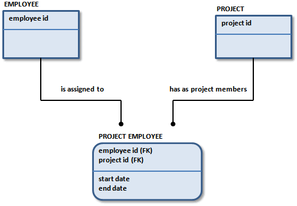

Because a relational database relies on data values to implement relationships, the integrity of the data in the key fields is important. For example, if you change a value in a primary key column of a parent table, reflect this change in each child table where the column appears as a foreign key. The action that is applied to the foreign key value varies depending on the rules defined by the business.
For example, a business that manages multiple projects might track its employees and projects in a model similar to the one in the following example. The business has determined that the relationship between PROJECT and PROJECT EMPLOYEE is identifying, so the primary key of PROJECT becomes a part of the primary key of PROJECT EMPLOYEE.

The business also decides that for each instance of PROJECT EMPLOYEE there is exactly one instance of PROJECT, which indicates PROJECT EMPLOYEE is existence-dependent on PROJECT.
What would happen if you were to delete an instance of PROJECT? If the business does not want to track instances in PROJECT EMPLOYEE if PROJECT is deleted, delete all instances of PROJECT EMPLOYEE that inherited part of their key from the deleted PROJECT.
The rule that specifies the action taken when a parent key is deleted is known as referential integrity. The referential integrity option chosen for this action in this relationship is Cascade. Each time an instance of PROJECT is deleted, this Delete cascades to the PROJECT EMPLOYEE table. The Delete action also deletes all related instances in PROJECT EMPLOYEE.
Available actions for referential integrity include the following:
If an instance in the parent entity is deleted, each related instance in the child entity must also be deleted.
Deletion of an instance in the parent entity is prohibited if the following is true:
If an instance in the parent entity is deleted, the foreign key attributes in each related instance in the child entity are set to NULL.
If an instance in the parent entity is deleted, the foreign key attributes in each related instance in the child entity are set to the specified default value.
No referential integrity action is required. Not every action must have a referential integrity rule associated with it. For example, a business may decide that referential integrity is not required when deleting an instance in a child entity. This business rule is valid where the cardinality is zero, one to zero, or one or more, because instances in the child entity can exist even if there are no related instances in the parent entity.
Although referential integrity is not a formal part of the IDEF1X or IE languages, it does capture business rules that indicate how the completed database works. Referential integrity is a critical part of data modeling and provides a method for both capture and display of referential integrity rules.
Once referential integrity is defined, the facilitator or analyst tests the referential integrity rules defined by the business users. The facilitator or analyst asks questions or works through different scenarios that show the results of the business decision. When the requirements are defined and fully understood, specific referential integrity actions, such as Restrict or Cascade can be recommended.